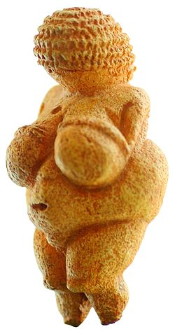
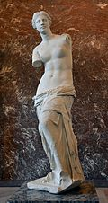
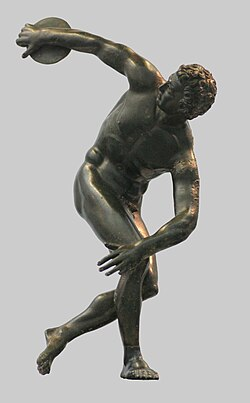
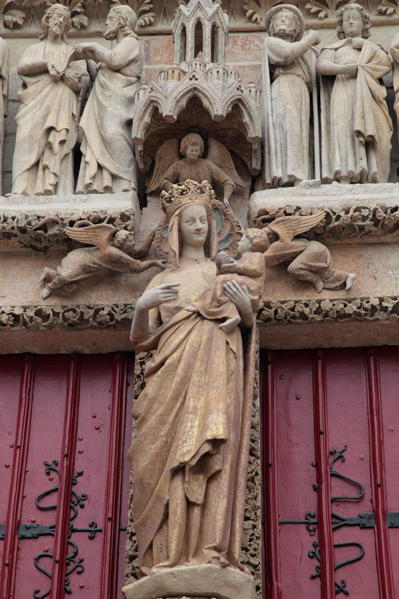
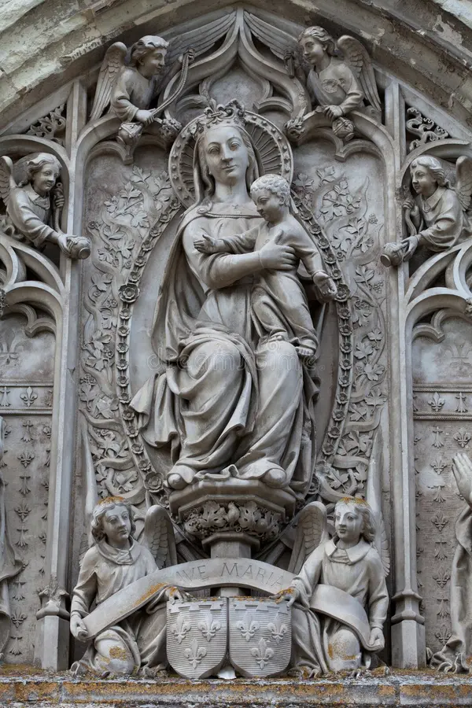
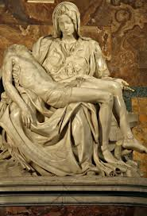
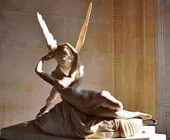

| Preistorie și antichitate |
| Grecia antică |
| Imperiul Roman |
| Evul mediu |
| Renașterea |
| Neoclasicismul |
|
Perioada de început a istoriei sculpturii poate fi considerată paleoliticul superior (între 30.000 și 10.000 î.Hr., magdalenian). Nu se cunosc opere de artă anteriore acestei epoci. Dacă de la omul de Neanderthal nu au rămas vestigii, în schimb Homo sapiens, geniul creator de imagini, ne-a lăsat o multitudine de lucrări. Astfel, pereții peșterilor erau decorați cu scene din viața cotidiană (bizoni, cerbi), care constituiau prada vânătorului Epocii Glaciare. Principalele teme constau în redarea, la început fotografică, a oamenilor sau a animalelor. Statuetele din Epoca Pietrei erau realizate din fildeș sau piatră mai puțin dură. Au supraviețuit timpului chiar și lucrări din argilă. Un exemplu în acest sens îl constituie bizonii găsiți la peștera Grotte du Tuc de lângă lacul Aubert (zona Pirineilor). Sunt frecvente reprezentări feminine ca "Venus din Willendorf" descoperită pe teritoriul Austriei actuale și datată cu peste 22.000 de ani în urmă. Astfel de reprezentări feminine sunt realizate cu pieptul, pântecul și șoldurile exagerate, sugerând puterea femeii de a genera viață, femeie căreia i se asocia cultul fertilității, fertilitate de care depindea supraviețuirea și evoluția tribului. Multe asemenea figurine, reprezentări ale fertilității (peste 100) au fost descoperite în întreaga Europă. |  |
|
Istoria sculpturii grecești poate fi divizată în mai multe perioade:
|  |
|
Pe teritoriul Italiei de astăzi, înaintea civilizației romane a înflorit cea etruscă (secolele VIII - III î.Hr.). Fiind un popor profund religios, etruscii au creat o sculptură care avea o destinație religioasă și mai ales funerară: sarcofage, urne pentru cenușa decedaților etc.Sculptura romană are ca punct de plecare cea etruscă, cu deosebirea că romanii acordau mai multă atenție cultului strămoșilor, motiv pentru care romanii au avut o preferință specială pentru arta portretului.Spre deosebire de greci, romanii nu excelau în sensibilitate estetică și intelectuală. Împărații lor impuneau realizarea unor portrete realiste și arcuri triumfale prin care să impresioneze oamenii de rând și poparele subjugate. Exemple: Arcul de triumf al împăratului Titus, al lui Constantin. Romanii considerau arta un mijloc de educație și un instrument de propagandă națională. Prin sculptură, se glorificau evenimentele militare sau politice, victoriile și persoana împăratului. Un exemplu îl constituie Columna lui Traian. Prin marea diversitate de scene, figuri, este evocată victoria împăratului Traian în cele două războaie dacice. Un alte exemplu este bustul împăratului Constantin.Un exemplar care a supraviețuit timpului, în ciuda distrugerilor datorate invaziilor barbare sau reconstrucției realizate de creștini, este statuia ecvestră a împăratului Marcus Aurelius, ce datează din perioada 161 - 180 d.Hr. |  |
Sculptura romanicăStilul romanic a evoluat între secolele al IX-lea și al XII-lea. La începutul celui de-al doile mileniu are loc o renaștere a producției de opere de artă în întreaga Europă, aceasta datorându-se creșterii economice, atât în domeniul produției, cât și în cel comercial. Majoritatea bisericilor (atât cele mici, cât și marile catedrale) au fost ornamentate cu sculpturi, mai ales în piatră. Predominau scenele biblice care aveau un scop educativ. În Franța avem ca centre importante: Cluny, Autun, Vézelay, Toulouse, Moissac, în Spania, León, Santiago de Compostela, iar în Italia putem enumera ca orașe reprezentative: Como, Modena, Verona, Ferrara, Parma, Pisa, Lucca, Apulian. |
 |
Sculptura goticăSpre deosebire de stilul romanic, în care personajele erau stilizate, abstractizate, create din forme angulare, cu aparență expresionistă, în sculptura perioadei gotice (din secolul al XII-lea până în secolul al XV-lea) se revine la formele naturale, se studiază mai bine vestimentația și formele anatomice, sculptura capătă animație, figurile sunt juvenile, vestmintele au falduri ample, drapajele căzând în mod natural. Atitudinile sunt mai autentice, fizionomiile au expresii studiate care denotă o amplă analiză psihologică. Sculptura gotică pe fațadele bisericilor este reprezentată de statui-coloane imaginând siluete de regi și profeți cu aspect imobil , fețe austere, trupuri aproape fără șolduri și umeri.În a doua jumătate a secolului al XIII-lea, sculptura reapare în interiorul edificilor; în timpul domniei lui Ludovic cel Sfânt, se dezvoltă la Paris un stil grațios numit Stilul Parizian. În siluetele elegant unduitoare, pe fețele fine, cu ochi migdalați, cu pomeți proeminenți, nas mic si surâs suav, apare un oarecare manierism.Acest stil se regăsește la Îngerul surizând din Catedrala din Reims, stil care evoluează pe durata întregului secol al XIII-lea, în arta statuară monumentală precum și în artele decorative. Statuile de devoțiune se multiplică, iar Fecioara cu pruncul devine o temă favorită. Paralel cu acest stil elegant, în plastica funerară se dezvoltă un curent realist care cunoaște un mare avânt, începând de la sfârșitul secolului al XIII-lea. Căutările în această direcție duc la apariția portretului, la mijlocul secolului. Sub domnia lui Carol al V-lea (1364-1380), al cărui sprijin este foarte important, sculptori precum André Beauneveu (autorul statuii reprezentând personajul defunct, pe lespedea mormântului, a regelui Carol al V-lea), ating o putere de expresie neegalată până atunci. |  |
|
În secolul al XV-lea, în nordul Italiei, se formează o pătură aristocratică interesată în artă. În același timp crește interesul pentru arta clasică. De acum înainte, sculptura se va adresa cu precădere aristocraților și nu clerului. Se acorda interes detaliilor umane iar redarea devine tot mai realistă. Acest lucru este vizibil încă de la reprezentanții goticului târziu: Lorenzo Ghiberti, Tulio Lombardo, Jacopo della Quercia și Andrea Pisano.Predecesoare ale Renașterii pot fi considerate figurile sculptate la Chartres.Debutul renașterii în sculptură poate fi considerat tronul baptisteriului din Pisa realizat de Nicola Pisano, sculptură care are mai mult valențe arhitectonice decât calitatea unui simplu obiect liturgic. Prin decorarea zidurilor lui Orsanmichelle, Donatello îl depășeste pe Pisano, mai ales prin statuia lui San Marco, una din primele sculpturi cu adevărat renascentiste. O alta sculptură valoroasă este statuia lui Sfântul Gheorghe, reprezentat într-o armură tipic romană.Cei mai cunoscuți sculptori renascentiști italieni sunt: Michelangelo, Donatello, Verrocchio, Gian Lorenzo Bernini. La nord de Alpi se remarca Tilman Riemenschneider.În Franța, Renașterea debutează în epoca lui Francisc I, care a promovat artiști ca: Benvenuto Cellini, Leonardo da Vinci. Pe masură ce puterea Franței se dezvoltă, se mută aici focarul renașterii europene.Perioada Renașterii se încheie la începutul secolului al XVII-lea, dar stilul sculpturilor sale este preluat de catolicism. |  |
|
În a doua jumătate a secolului al XVIII-lea, săpăturile efectuate la Pompeii, Herculaneum, precum și lucrările arheologului german Johann Joachim Winckelmann au redeschis interesul pentru modelele oferite de arta Greciei antice, artă care în câteva decenii devine un ideal. Acesta mișcare, denumită ulterior neoclasicism, se continuă până la începutul secolului al XIX-lea. Fațadele și zidurile tuturor clădirilor vor fi ornate cu porticuri, colonade în stil grecesc. Roma devine centrul culturii neoclasice. Liderul acestui curent în Italia este Antonio Canova. În scurt timp, curentul ia amploare, răspândindu-se și în Anglia, Germania, Danemarca.Lucrări celebre: Tezeu și Minotaurul, Perseu și capul Meduzei.În Franța, neoclasicismul se constituie ca o reacție împotriva barocului teatral și a stilulului rococo prea bogat în culori. Mare maestru a fost Jean-Antoine Houdon cu ale sale portrete statuare. |  |